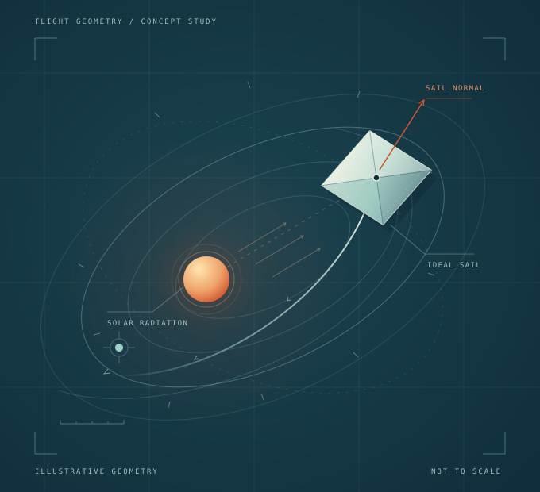

01
01Steering with sunlight.
Connecting evolutionary neurocontrol and local optimisation for ideal solar-sail interplanetary rendezvous.
Aerospace engineering · FH Aachen
I’m Meet, a master’s student in aerospace engineering. I connect trajectory research, spacecraft ground systems, and software built around the people who use it.

Selected work / 01—04
Understand the inputs. Make the behaviour explicit. Build something that can be checked—and used.
01Connecting evolutionary neurocontrol and local optimisation for ideal solar-sail interplanetary rendezvous.
 02
02A graphical command-verification workflow and mission-database integration for CubeSat propulsion.
 03
03Diamond Ledger / Heera Hisab: a Gujarati-first, offline ledger shaped around an existing handwritten way of working.
 04
04GST Local Pro: an offline spreadsheet review and export tool developed around an accounting workflow.
Project visuals are original conceptual illustrations. Professional and private work is presented at a high level.
Professional experience
GOSGround segment engineering
My work at GOS connects spacecraft interfaces to usable ground software. I contribute to telemetry and telecommand definitions, mission-database integration, operational scripts, and engineering documentation in a Yamcs-based environment.
Yamcs · XTCE / XML · Python · Java
How I work
A trajectory model and a ledger look different. Both become better systems when assumptions, state, and checks are clear.
Follow the inputs, constraints, and people involved. A useful model begins with a clear problem.
Translate the model into software with explicit interfaces, inspectable state, and a usable path through the work.
Use validation, replay, source traceability, and clear limitations to understand what a result actually demonstrates.
A little about me
I’m pursuing an M.Sc. in Aerospace Engineering at FH Aachen, specialising in Space Exploration Engineering, after completing my bachelor’s degree in Aerospace Engineering there.
I’m drawn to the space between the equation and the working tool: a sail-steering problem, a spacecraft command interface, or a workflow that deserves better software. I enjoy finding the structure in a complicated problem and making it clearer for the next person.
Start a conversation
I’m interested in aerospace engineering, ground systems, numerical methods, and thoughtful software. Find me on GitHub.
Meet me on GitHub